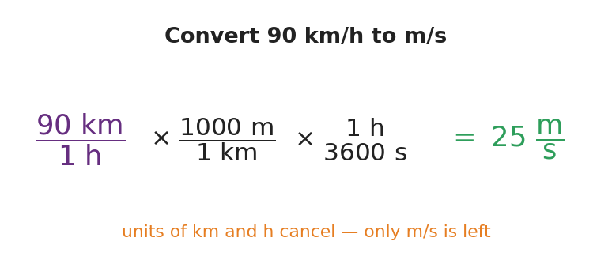

Unit: Math in Science — Lesson 04: Units, Prefixes, and Dimensional Analysis
Phenomenon
A recipe reads "250 g flour, 0.2 L milk, bake at 180 °C" — but your kitchen has measuring cups and an oven in °F. A road sign says "100 km/h" — but your speedometer reads mph. Same physical amounts, different units. Today you become the translator, and you do it so carefully that the units themselves tell you when you're right.

Driving Question
How do we change a quantity's units without changing the actual amount — and how do the units themselves prove we did it right?
Notice & Wonder
Which numbers in the recipe or on the sign are in units your kitchen or car can't read? What would you need to "translate" them?
Initial Model
Pick one quantity from the recipe or the road sign. Write what you'd have to do to express it in the US system. Do you think the number will get bigger or smaller? Why?
Investigate
Type a value, choose its metric prefix, and the converter shows the factor-label step that rescales it to the base SI unit. Watch the prefix unit cancel, leaving only the base unit — that cancellation is how the units prove the answer is right.
Converted to base SI unit: 0
Make It Make Sense
- Convert 5,000 m to kilometers. Did the number get bigger or smaller, and why?
- Convert 3.2 m to centimeters.
- A student converts 72 km/h and gets an answer in km·m/h. What went wrong, and how should they fix it?
Stuck? Sentence frame
"To go from ___ to ___, I multiply by ___ so the ___ cancels."
Key Vocabulary (max 3)
- SI unit — the agreed international scientific unit for a quantity: meter (length), kilogram (mass), second (time)
- metric prefix — a word/symbol (k, c, m, μ, M) that rescales a base unit by a power of ten (kilo = 10³, milli = 10⁻³)
- dimensional analysis — the factor-label method: multiplying by ratios equal to 1 so unwanted units cancel, leaving the desired units
Revise Your Model
Return to the quantity you chose in your Initial Model. Convert it now, showing your factor-label or prefix step. Was your "bigger or smaller" prediction right?
Return to the Phenomenon
Pick one recipe or road-sign quantity. State it in the US (or base SI) system in one sentence, and name how you knew your conversion was right. Target: "100 km/h ≈ 62 mph, and I knew it was right because the km and h units canceled, leaving mi/h."
Exit Ticket + Closing Reflection
- (a) Convert 2.5 km to meters.
(b) Convert 45 mm to meters (use the prefix).
(c) Convert 72 km/h to m/s using the factor-label method, and circle the units that cancel. - Reflection: Where else in your life would "check that the units make sense" have saved you a mistake? Name one.